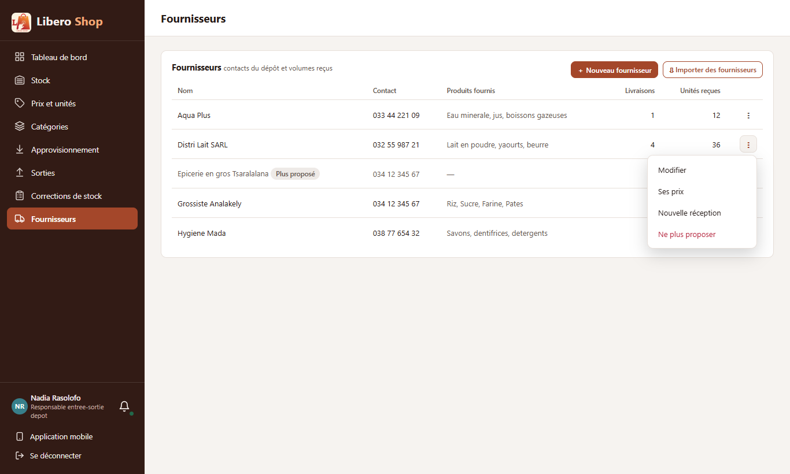
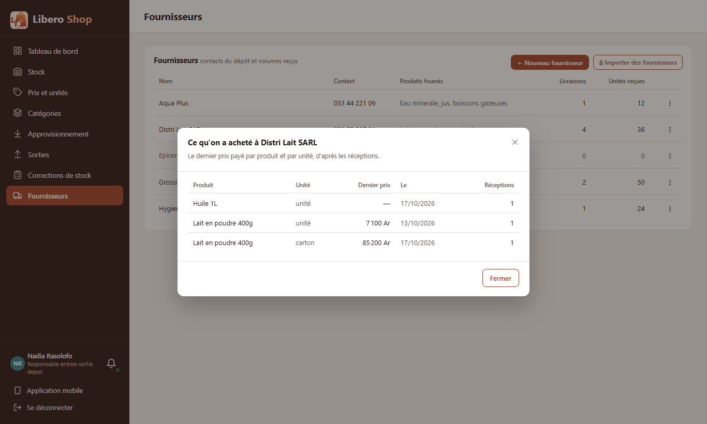
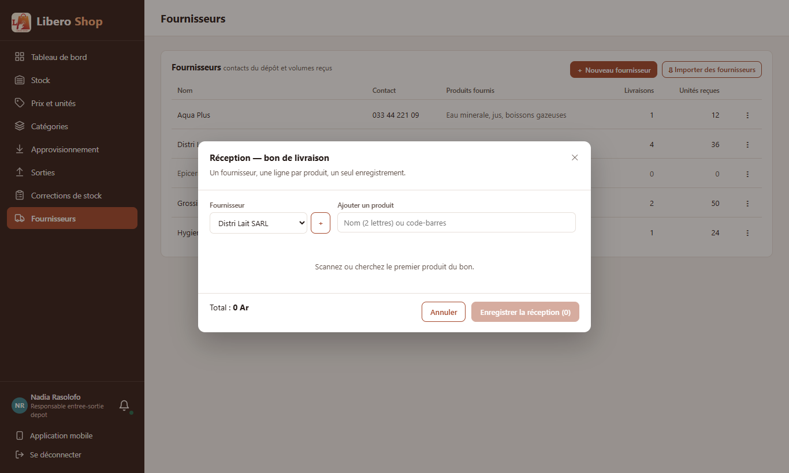
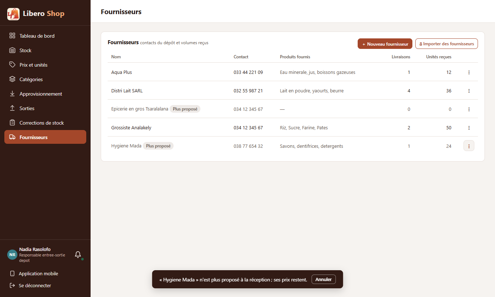

← Tous les comptes rendus de l'interface
UI-34Page Fournisseurs avec un menu
- Chaque fournisseur a un « ⋮ » : Modifier, Ses prix, Nouvelle réception, Ne plus proposer.
- « Ses prix » montre ce qu'on lui a acheté : le dernier prix payé par produit et par unité, la date, le nombre de réceptions.
- « Nouvelle réception » ouvre le bon de livraison (UI-31) avec ce fournisseur déjà choisi.
- « Ne plus proposer » le retire des listes de la réception sans rien effacer ; un bouton « Annuler » dans le message le remet.
- « ＋ Nouveau fournisseur » et la liste vide qui propose le bouton étaient déjà faits (UI-32, UI-80).
1. Le problème
La page Fournisseurs n'était qu'une liste. Corriger un numéro de téléphone, voir combien on payait un grossiste ou cesser de travailler avec lui n'était possible nulle part.
2. Ce qui a été fait
Côté serveur : la modification d'un fournisseur (le même nom écrit autrement qu'un autre fournisseur reste refusé) et un indicateur « ne plus proposer », ajouté aux fournisseurs existants avec la valeur « proposé ». « Ses prix » est calculé à l'écran à partir des réceptions, sans nouvel appel au serveur ; les réceptions annulées (UI-33) n'y comptent pas.
« Ne plus proposer » ne demande pas de confirmation : rien n'est perdu et le message propose « Annuler ».
3. Le résultat en images
Nadia — responsable de dépôt




4. Tableau récapitulatif
| Fichier | Changement |
|---|---|
backend/…/service/SupplierService.java | modifier un fournisseur ; ne plus le proposer |
backend/…/entity/Supplier.java, web/SupplierController.java, web/dto/SupplierResponse.java | colonne retired ; PUT /api/suppliers/{id} et …/retired |
ui/…/features/depot-manager/suppliers.component.ts | « ⋮ » par fournisseur |
ui/…/core/stock/supplier-purchases.ts, shared/components/supplier-purchases-dialog.component.ts | « Ses prix » |
ui/…/shared/components/supplier-create-dialog.component.ts | sert aussi à modifier |
ui/…/shared/components/delivery-dialog.component.ts, features/depot-manager/supply.component.ts | fournisseur de départ ; fournisseurs écartés hors des listes |
| Règle | Test |
|---|---|
| Corriger garde son propre nom ; le nom d'un autre est refusé ; écarter puis reproposer | SupplierServiceTest (3 tests) |
| Dernier prix par produit et unité ; réceptions annulées exclues | supplier-purchases.spec.ts |
| Le menu selon que le fournisseur est proposé ou non | suppliers-menu.component.spec.ts |
| « Ses prix » s'affiche, une ligne par unité | supplier-purchases-dialog.component.spec.ts |
Tests : serveur au vert (618 tests), interface au vert (270 tests).
Signalé : un défaut du compilateur Angular (« tmp_26_0 is not defined ») apparaît quand
l'expression track d'une liste contient ??. Vu sur la vraie page pendant les captures, corrigé
par une petite fonction ; le test qui affiche la fenêtre l'aurait attrapé, il a été ajouté.